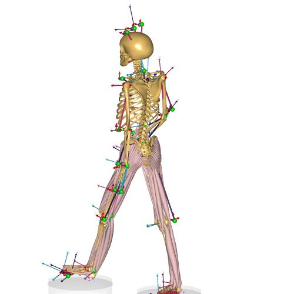

Inertial MoCap example¶
Example of a MoCap mdoel using data from an inertial motional caputure suit. The model uses a BVH file with data from an Xsens suit. The ground reaction forces are predicted using the GRF prediction algorithm.
Example Main File:
The model works using virtual markers placed on the BVH rig (i.e. the stick-figure model specified by the BVH file). The virtual markers are used to make the Musculoskeletal model moved similar to marker based mocap models.
New in version 2.2.3: The example was updated use the new features in v.7.2.3 of the AnyBody Modeling system. It fixes the problems which can occur in some BVH files due to gimbal locks and multiple solutions (N*2*pi) to the euler angle equations. See the section below on how to update old examples.
AnyBody automatically calculates the virtual markers positions, and the model is scaled directly from the size of the BVH stick figure. Hence the model contains no Parameter indentifcation step to find The remaining parts of the model are equvilent to other MoCap model based on C3D files.
Updating old (ammr < 2.2.3) BVH based models¶
The safest approch is to reimplement your model based on the newest BVH example and AMMR v.2.2.3.
However, it is also posible to change a few files in existing models to utilize the new BVH improvments in AnyBody v.7.2.3.
Important: Make sure your use the new AMMR (>=2.2.3) and new AnyBody Modeling System (>=7.2.3). You can copy your existing model folder into the new AMMR, or edit the local
libdef.anyfile to point to the new AMMR.Add following to the local
libdef.anyfile to enable new features:#define MOCAP_FUTURE_BVH_READER_73
From future version 7.3 this will not be necessary
Add the following the follwing to
MarkerProtocol.anyfile:Main.ModelSetup.BVHFileData.CompatibilityMode_72 = Off; Main.ModelSetup.BVHFileData.MarkerNames = { "HEAD", "HEAD_R", "HEAD_L", "SACR", "RHJC", "LHJC", "T1C7Jnt", "SPINE", "L3", "CHEST", "RSJC", "REJC", "RALE", "RWRB", "RWJC", "RHT1", "RHT2", "LSJC", "LEJC", "LALE", "LWRB", "LWJC", "LHT1", "LHT2", "RKJC", "RKNE", "RAJC", "RTOE", "RTOE2", "LKJC", "LKNE", "LAJC", "LTOE", "LTOE2" };
Note
If you have adapted your protocol to anything else that the Xsens standard you need to use your own marker names. Also, the model may complain about deprecated members, which can just be deleted.